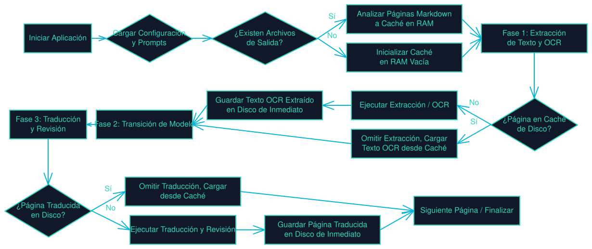

Arquitectura Limpia (SRP)
Código modular y limpio bajo el principio de responsabilidad única (Single Responsibility Principle), facilitando su mantenimiento y extensión.
Traductor incremental de documentos PDF página por página. Desarrollado en .NET 10 (C#) con soporte para OCR local mediante LLMs de visión en LM Studio.
Diseño orientado a la eficiencia, robustez y control local.
Código modular y limpio bajo el principio de responsabilidad única (Single Responsibility Principle), facilitando su mantenimiento y extensión.
Modo Text: Extrae texto directamente de PDFs editables.
Modo Image: Renderiza páginas a PNG para hacer OCR con LLMs de visión locales.
Traduce y escribe página por página en tiempo real directo al archivo Markdown resultante, lo que previene el uso excesivo de memoria RAM.
Diseño modular y flujo de procesamiento de documentos en PolyglotCLI.

PolyglotCLI se adapta a flujos interactivos rápidos o automatizaciones en consola.
Al ejecutar el comando sin parámetros, se despliega un menú interactivo en la terminal que permite escanear servidores locales de LM Studio, listar modelos activos, arrastrar archivos PDF a la ventana y validar los parámetros antes de procesar.
Ideal para scripts o procesamiento por lotes. Ejemplo de traducción directa de un PDF editable:
Para traducir un PDF escaneado (usando OCR por imágenes con un LLM de visión local como Qwen2.5-VL):
Parámetros soportados para configurar las ejecuciones de forma manual.
| Bandera | Nombre largo | Descripción | Por defecto |
|---|---|---|---|
-f |
--files |
Ruta(s) al archivo PDF a procesar (permite múltiples). | Requerido |
-m |
--mode |
Modo de lectura: text (nativa) o image (OCR). |
text |
-a |
--api |
URL base de la API de LM Studio. | Cargado de config.json |
--model |
--model |
Nombre del modelo cargado para la traducción. | Cargado de config.json |
-vmodel |
--vision-model |
Nombre del modelo de visión cargado para OCR. | Cargado de config.json |
-t |
--target-lang |
Idioma de destino para la traducción. | Spanish |
-o |
--output-dir |
Carpeta destino de los archivos traducidos en Markdown. | output |
-p |
--pages |
Rango de páginas (ej. 1-5, 12, 1,3,5 o all).
|
all |
-d |
--debug |
Modo de depuración rápida (procesa solo las primeras 2 páginas). | false |